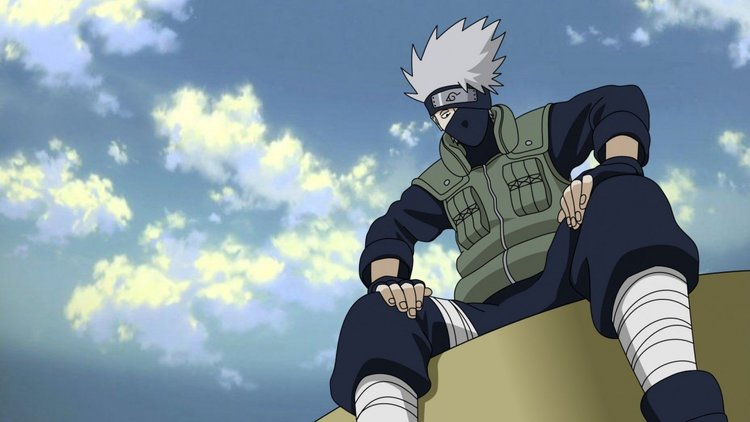

|
Naruto Next Generations de Ukyo Kodachi y Mikio Ikemoto. Apareciendo inicialmente en el flashforward en el debut de la serie, Kawaki es un joven que aparentemente se convertiría en el némesis del personaje principal de la serie, Boruto Uzumaki. |
|  | Kakashi Hatake es un personaje ficticio del manga y anime Naruto, creado por Masashi Kishimoto. |
|
Sakura Haruno es un personaje ficticio del manga y anime Naruto, creado por el mangaka Masashi Kishimoto. |